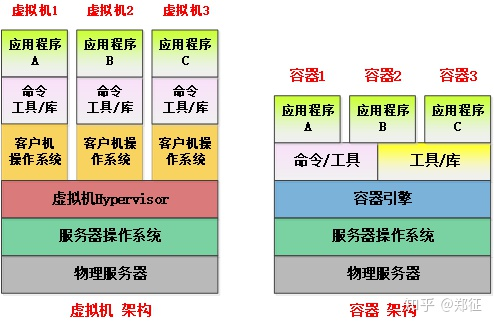
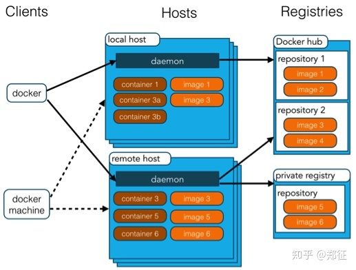
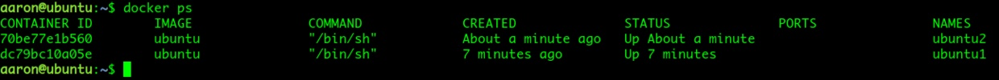

相信大家都用过虚拟机，不过除了虚拟机，还有一种更轻量的虚拟化方案——容器。docker 就是目前最流行的 Linux 容器解决方案。本文从 docker 的基本概念讲起，介绍它能解决哪些问题，并以 Ubuntu 18.04 为例介绍 docker 的安装、常用命令、数据卷、自制镜像与网络配置。
docker 是什么
大家都知道虚拟机吧，windows 上装个 linux 虚拟机是大部分程序员的常用方案。公司生产环境大多也是虚拟机，虚拟机将物理硬件资源虚拟化，按需分配和使用，虚拟机使用起来和真实操作系统一模一样，当废弃不用时直接删除虚拟机文件即可回收资源，很方便集中管理。
由于虚拟机非常庞大，同时对硬件资源的消耗也大，linux 发展出了另一种虚拟化技术，即 linux 容器（Linux Containers，缩写为 LXC），它并不像虚拟机那样模拟一个完整的操作系统，却提供虚拟机一样的效果。如果说虚拟机是操作系统级别的隔离，那么容器就是进程级别的隔离，可以想象这种级别隔离的优点，无疑是快速的、节省资源的。
docker 就是对 linux 容器的封装，提供简单实用的用户接口，是目前最流行的 linux 容器解决方案。
百科对 docker 的定义是：docker 是基于 Go 语言的开源应用容器引擎，并遵从 Apache 2.0 协议。docker 让开发者可以打包他们的应用以及依赖包到一个可移植的容器中，然后发布到任何流行的 linux 机器上，也可以实现虚拟化。容器是完全使用沙箱机制，相互之间不会有任何接口。
docker 解决什么问题
解决虚拟机资源消耗问题
服务器操作系统之上运行着虚拟机，虚拟机上运行着客户操作系统，客户操作系统之上运行着用户的应用程序，一台服务器 80% 的资源开销都花费在了硬件虚拟化和客户机操作系统本身。

如果采用 docker 容器技术，容器上运行着虚拟服务器，虚拟服务器中运行着用户的应用程序，虚拟服务器和服务器操作系统使用同一内核，虚拟服务器的文件系统使用物理服务器的文件系统，但做了隔离，看上去每个虚拟服务器都有自己独立的文件系统；在物理服务器上建立了虚拟网桥设备，每个虚拟服务器通过虚拟网桥设备连接网络。虚拟服务器直接使用物理服务器的 CPU、内存、硬盘，并不对硬件进行虚拟化，因此没有硬件虚拟化和客户机操作系统占用的资源消耗，每一台虚拟服务器的性能接近于物理服务器性能。
一台普通家用电脑运行一个 Linux 虚拟机可能已经非常卡，但是却可以使用 docker 虚拟出几十甚至上百台虚拟的 linux 服务器。如果换成性能强劲的服务器，使用 docker 就可以提供私有云服务了。
快速部署
软件开发的难题在于环境配置，在自己电脑上运行的软件，换一台机器可能就无法运行，除非保证操作系统的设置正确，各种组件和库的正确安装。比如部署一个 Java 开发的 web 系统，计算机必须安装 Java 和正确的环境变量，可能还需要安装 tomcat、nginx。换台机器部署就要重来一次。
使用 docker 可以将应用程序及依赖打包在一个文件里（docker 镜像文件），运行这个文件就会启动虚拟服务器，在虚拟服务器中启动应用程序或服务，就像真实在物理机上运行一样。有了 docker，就可以一次部署，处处运行，也可以用于自动化发布。
提供一次性的环境
比如，本地测试他人的软件、持续集成的时候提供单元测试和构建的环境，启动或关闭一个虚拟服务器就像启动或关闭一个进程一样简单和快速。
提供弹性的云服务
因为 docker 容器可以随开随关，很适合动态扩容和缩容。
组建微服务架构
通过多个容器，一台机器可以跑很多个虚拟服务器，因此在一台机器上就可以模拟出微服务架构，也可以模拟出分布式架构。
安装 docker 引擎
本文以 Ubuntu 18.04 系统为例介绍安装与使用，其他操作系统可以参考官方文档的对应说明。
获取最新版本的 docker 安装包：
aaron@ubuntu:~$ wget -qO- https://get.docker.com/ | sh执行上述命令，输入当前用户密码，即可自动下载最新版的 docker 安装包并自动安装。安装完成后有个提示：
If you would like to use Docker as a non-root user, you should now consider
adding your user to the "docker" group with something like:
sudo usermod -aG docker aaron
Remember that you will have to log out and back in for this to take effect!
WARNING: Adding a user to the "docker" group will grant the ability to run
containers which can be used to obtain root privileges on the
docker host.
Refer to https://docs.docker.com/engine/security/security/#docker-daemon-attack-surface
for more information.当希望以非 root 用户直接运行 docker 时，需要执行下面的命令，将用户 aaron 添加到 docker 用户组中，然后重新登陆：
sudo usermod -aG docker aaron否则会报下面的错误：
docker: Got permission denied while trying to connect to the Docker daemon socket at unix:///var/run/docker.sock: Post http://%2Fvar%2Frun%2Fdocker.sock/v1.38/containers/create: dial unix /var/run/docker.sock: connect: permission denied.
See 'docker run --help'.执行下列命令启动 docker 引擎：
aaron@ubuntu:~$ sudo service docker start安装成功后已默认设置开机自启动，如果要手动设置，执行下面命令：
sudo systemctl enable docker
sudo systemctl start docker测试运行：
aaron@ubuntu:~$ sudo docker run hello-world理解 docker 的架构
使用前先了解下 docker 的架构，如下图所示：

- docker 镜像（image）：存放在 docker 仓库（Registry）中的文件，是用于创建 docker 容器的模板。
- docker 容器：独立运行的一个或一组应用，可以理解为前述介绍的虚拟服务器。
- docker 主机：一个物理或者虚拟的机器，用于执行 docker 守护进程和容器。
- docker 客户端：通过命令行或者其他工具使用 docker API 与 docker 的守护进程通信。作为用户，我们直接使用的是 docker 客户端。
docker 命令
查看 docker 命令的帮助信息：
docker --help # docker 全部命令帮助信息
docker COMMAND --help # docker 具体命令 COMMAND 的帮助信息查看 docker 信息：
docker info可以看到容器的池、已用数据大小、总数据大小、基本容器大小、当前运行容器数量等。
搜索镜像，从网络中搜索别人做好的容器镜像：
docker search ubuntu
docker search centos从搜索结果可以看出，有的镜像已经集成了 php、java、ansible 等应用。我们也可以制作包含自己应用或服务的镜像文件，将此文件传给别人，别人即可直接使用 docker 打开容器，不需要任何额外的操作，也不像虚拟机那样消耗资源，即可运行你的应用或服务，非常方便。
从网络中下载别人做好的容器镜像：
docker pull centos
docker pull ubuntu导入下载好的容器镜像文件：
docker load < image_xxx.tar查看镜像：
docker images
docker images -a检查镜像，可以看到容器镜像的基本信息：
docker inspect ubuntu删除镜像，通过镜像的 id 来指定删除：
docker rmi ubuntu删除全部镜像：
docker rmi $(docker images -q)显示镜像历史：
docker history ubuntu运行容器
docker 容器可以理解为在沙盒中运行的进程，这个沙盒包含了该进程运行所必需的资源，包括文件系统、系统类库、shell 环境等。但这个沙盒默认是不会运行任何程序的，需要在沙盒中运行一个进程来启动某一个容器。这个进程是该容器的唯一进程，所以当该进程结束的时候，容器也会完全停止。
运行 ubuntu 容器并进入交互式环境：
aaron@ubuntu:~$ docker run -i --name="ubuntu1" --hostname="ubuntu1" ubuntu /bin/sh进入容器后执行 cat /etc/hosts、whoami、uname -a 等命令：
cat /etc/hosts
127.0.0.1 localhost
::1 localhost ip6-localhost ip6-loopback
fe00::0 ip6-localnet
ff00::0 ip6-mcastprefix
ff02::1 ip6-allnodes
ff02::2 ip6-allrouters
172.17.0.2 ubuntu1
whoami
root
uname -a
Linux ubuntu1 4.15.0-34-generic #37-Ubuntu SMP Mon Aug 27 15:21:48 UTC 2018 x86_64 x86_64 x86_64 GNU/Linux上述命令我们创建了一个名字为 ubuntu1 的容器，设置容器的主机名为 ubuntu1，进入 /bin/sh 命令后我们打印了 hosts 文件的内容，查看了内核版本（与本机操作系统版本一致），这里可以使用各种 linux 命令，就像在新的操作系统中使用命令一样。同样的方法，我们在新的终端创建一个 ubuntu2 的容器，并使用 docker ps 查看正在运行的容器。

输入 exit 退出容器。以守护态运行容器：
docker run -d ubuntu会出现一串长的字母数字组成的串，为容器的 id。请注意容器要有持续运行的进程存在，否则容器会很快自动退出。
运行容器并指定 MAC 地址：
docker run -d --name='centos3' --hostname='centos3' --mac-address="02:42:AC:11:00:24" docker-centos6.10-hadoop-spark列出所有的容器：
docker ps -a列出最近一次启动的容器：
docker ps -l检查容器，可以获取容器的相关信息：
docker inspect centos1还可以通过 -f 参数配合模板获取容器的特定字段：
docker inspect -f '{{.Id}}' centos1 # 获取容器 CID
docker inspect -f '{{.State.Pid}}' centos1 # 获取容器 PID
docker inspect -f '{{.NetworkSettings.IPAddress}}' centos1 # 获取容器 IP
docker inspect -f '{{.NetworkSettings.Gateway}}' centos1 # 获取容器网关
docker inspect -f '{{.NetworkSettings.MacAddress}}' centos1 # 获取容器 MAC连接容器：直接 ssh 容器的 IP 地址，输入密码 123456 即可登录。
容器运行后，还可以通过另一种方式进入容器内部：
docker exec -it centos /bin/sh查看容器运行过程中的日志：
docker logs centos1列出一个容器里面被改变的文件或者目录，列表会显示出三种事件：A 增加的、D 删除的、C 被改变的：
docker diff centos1和初始容器镜像相比，用户或系统增加/修改/删除了哪些目录文件，都可以查看到。
查看容器里正在运行的进程：
docker top centos1拷贝容器里的文件/目录到本地服务器：
docker cp centos1:/etc/passwd /tmp/
ls /tmp/passwd通过网络 IP 地址也可以将容器的文件拷贝到服务器，这种方式比较方便。
停止容器：
docker stop centos1停止所有容器：
docker kill $(docker ps -a -q)启动容器：
docker start centos1删除单个容器（删除之前要先停止该容器的运行）：
docker stop centos1
docker rm centos1删除所有容器：
docker kill $(docker ps -a -q)
docker rm $(docker ps -a -q)卷的概念
为了能够保存（持久化）数据以及共享容器间的数据，docker 提出了卷的概念。卷（Volume）就是容器的特定目录，该目录下的文件保存在宿主机上，而不是容器的文件系统内。
数据卷是一个可供一个或多个容器使用的特殊目录，它绕过容器默认的文件系统，可以提供很多有用的特性：
- 数据卷可以在容器之间共享和重用；
- 对数据卷的修改会立马生效；
- 对数据卷的更新，不会影响镜像；
- 数据卷默认会一直存在，即使容器被删除。
注意：数据卷的使用，类似于 Linux 下对目录进行挂载（mount），容器中被指定为挂载点的目录中的文件会隐藏掉，能显示出来的是挂载的数据卷。
创建、使用数据卷：
mkdir -p /root/volume1
mkdir -p /root/volume2
docker run -d -v /volume1 --name='centos5' docker-centos6.10-hadoop-spark
docker run -d -v /root/volume1:/volume1 --name='centos6' docker-centos6.10-hadoop-spark
docker run -d -v /root/volume1:/volume1 -v /root/volume2:/volume2 --name='centos7' docker-centos6.10-hadoop-spark
docker run -d -v /root/volume1:/volume1:ro --name='centos8' docker-centos6.10-hadoop-spark使用 docker run 命令创建容器，指定 -v 标记来创建一个数据卷并挂载到容器里；可以挂载多个数据卷；可以设置卷的只读属性；也可以不指定宿主机映射的目录，由系统自动指定目录，再通过 docker inspect 来查看映射的路径。分别进入这些容器，即可查看 /volume1、/volume2 目录。
数据卷共享：如果要授权一个容器访问另一个容器的数据卷，可以使用 --volumes-from 参数来实现。
数据卷容器：如果有一些持续更新的数据需要在容器之间共享，最好创建数据卷容器。数据卷容器其实就是一个正常的容器，专门用来提供数据卷供其它容器挂载。
（1）创建一个名为 dbdata 的数据卷容器：
docker run -d -v /dbdata --name dbdata docker-centos6.10-hadoop-spark（2）在其他容器中使用 --volumes-from 来挂载 dbdata 容器中的数据卷：
docker run -d --volumes-from dbdata --name db1 docker-centos6.10-hadoop-spark
docker run -d --volumes-from dbdata --name db2 docker-centos6.10-hadoop-spark这样就可以实现容器之间的数据共享。分别进入这些容器，查看 /dbdata 目录即可验证。
自制镜像并发布
保存容器修改，提交一个新的容器镜像：
docker commit centos1 centos111将现有的容器提交形成一个新的容器镜像，使用 docker images 可以看到 centos111 镜像。通过此方法，可以创建一个新的容器镜像。
查看镜像：
docker imagesREPOSITORY TAG IMAGE ID CREATED SIZE
centos111 latest d691a75ee371 23 minutes ago 501.5 MB根据新容器镜像创建容器：
docker run -d --name='centos111' centos111查看容器：
docker inspect centos111导出和导入镜像
当需要把一台机器上的镜像迁移到另一台机器的时候，需要导出镜像与导入镜像。
机器 A：
docker save docker-centos6.10-hadoop-spark > docker-centos6.10-hadoop-spark2.tar或
docker save -o docker-centos6.10-hadoop-spark2.tar docker-centos6.10-hadoop-spark使用 scp 命令或者其他方式将 docker-centos6.10-hadoop-spark2.tar 拷到机器 B 上。
机器 B：
docker load < docker-centos6.10-hadoop-spark2.tar或
docker load -i docker-centos6.10-hadoop-spark2.tar发布容器镜像：
docker push centos6.8-lamp1即可将镜像发布到网络中。
docker 网络
docker 启动时会在宿主机器上创建一个名为 docker0 的虚拟网络接口。它会从 RFC 1918 定义的私有地址中随机选择一个主机不用的地址和子网掩码，并将它分配给 docker0，默认选择 172.17.0.1/16，一个 16 位的子网掩码给容器提供了 65534 个 IP 地址。
docker0 并不是正常的网络接口，只是一个在绑定到这上面的其他网卡间自动转发数据包的虚拟以太网桥，可以使容器与主机相互通信、容器与容器间相互通信。
docker 每创建一个容器，就会创建一对对等接口（Peer Interface），类似于一个管子的两端，在一边可以收到另一边发送的数据包。docker 会将对等接口中的一个作为 eth0 接口连接到容器上，并使用类似于 vethAQI2QT 这样的惟一名称来持有另一个，该名称取决于主机的命名空间。通过将所有 veth* 接口绑定到 docker0 桥接网卡上，docker 在主机和所有 docker 容器间创建一个共享的虚拟子网。
docker NAT 网络
docker 容器默认通过 NAT 方式访问网络。docker 启动时会在宿主主机上创建一个名为 docker0 的虚拟网络接口，docker0 只是一个在绑定到这上面的其他网卡间自动转发数据包的虚拟以太网桥，它可以使容器和主机相互通信、容器与容器间通信。
docker0 的网关地址是 172.17.0.1，掩码是 16 位，提供了 65534 个 IP 地址。
NAT 方式下，容器可以访问外网（宿主机以外），但宿主机以外的机器不能访问容器内网。
docker Bridge 网络
docker 容器也可以通过 bridge 方式访问网络。
bridge 方式下，容器可以访问外网（宿主机以外），宿主机以外的机器也能访问容器内网。
docker pipework
docker 自身的网络功能比较简单，不能满足很多复杂的应用场景。因此有很多开源项目用来改善 docker 的网络功能，如 pipework、weave、flannel 等。
pipework 是由 docker 的工程师 Jérôme Petazzoni 开发的一个 docker 网络配置工具，由 200 多行 shell 实现，方便易用。
安装 pipework：
git clone https://github.com/jpetazzo/pipework
cp pipework/pipework /bin/
chmod a+x pipework运行容器：
docker run -d --net='none' --name='centos9' docker-centos6.10-hadoop-spark配置容器网络，并连到网桥 docker0 上；网关在 IP 地址后面加 @ 指定：
pipework docker0 centos9 172.18.0.100/16@172.18.0.1docker 网络端口映射
容器如果使用 docker0 虚拟网络，那么容器的网络是 172.17.0.0/16，容器可以通过 NAT 方式访问外网，但外网不能访问内网；如果容器使用 br0 虚拟网络，容器和服务器可以在同一个网络地址段，容器可以访问外网，外网也可以访问容器网络。对于使用 docker0 虚拟网络的容器，可以通过端口映射的方式，让外网访问容器的某些端口。
运行容器：
docker run -d -p 38022:22 --name='centos10' docker-centos6.10-hadoop-spark连接容器：
ssh localhost -p 38022在其他服务器上通过访问物理服务器加端口即可访问容器，可以一次映射多个端口：
docker run -d -p 38022:22 -p 38080:80 --name='centos11' docker-centos6.10-hadoop-spark其实现原理是在服务器上通过 iptables 转发来实现的。当然也可以通过 iptables 转发整个容器 IP 地址。
总结
由于容器是进程级别的，相比虚拟机有很多优势。
（1）启动快。容器里面的应用，直接就是底层系统的一个进程，而不是虚拟机内部的进程。所以，启动容器相当于启动本机的一个进程，而不是启动一个操作系统，速度就快很多。
（2）资源占用少。容器只占用需要的资源，不占用那些没有用到的资源；虚拟机由于是完整的操作系统，不可避免要占用所有资源。另外，多个容器可以共享资源，虚拟机都是独享资源。
（3）体积小。容器只要包含用到的组件即可，而虚拟机是整个操作系统的打包，所以容器文件比虚拟机文件要小很多。
总之，容器有点像轻量级的虚拟机，能够提供虚拟化的环境，但是成本开销小得多。